Introduction
Ce rapport accompagne le relevé d'audit effectué sur le site « gouvernement.lu ».
La méthodologie d'audit employée repose sur le référentiel RGAA 4.1, consultable à l'adresse suivante : https://accessibilite.public.lu/fr/rgaa4.1/criteres.html
L'audit a été réalisé au moyen de l'utilisation de navigateurs web et d'outils spécialisés. Des tests de restitution ont également été effectués conformément à la base de référence définie par le RGAA 4.1.
Échantillon
L'audit a porté sur un échantillon de 15 pages pour le niveau double A (AA) :
| Nº page | Titre de la page | URL |
|---|---|---|
| P01 | Accueil | https://gouvernement.lu/fr.html |
| P02 | Aspects légaux | https://gouvernement.lu/fr/support/aspects-legaux.html |
| P03 | Contact | https://gouvernement.lu/fr/support/contact.html |
| P04 | Accessibilité | https://gouvernement.lu/fr/support/accessibilite.html |
| P05 | Plan du site | https://gouvernement.lu/fr/support/plan.html |
| P06 | Résultats de recherche | https://gouvernement.lu/fr/support/recherche.html?q=budget |
| P07 | Actualités | https://gouvernement.lu/fr/actualites.html |
| P08 | Actualité | https://gouvernement.lu/fr/actualites/toutes_actualites/communiques/2022/03-mars/25-delles-dieschbourg-ecolabel.html |
| P09 | Le gouvernement | https://gouvernement.lu/fr/gouvernement.html |
| P10 | 1er ministre | https://gouvernement.lu/fr/gouvernement/xavier-bettel.html |
| P11 | Ministères | https://gouvernement.lu/fr/ministeres.html |
| P12 | Dossiers | https://gouvernement.lu/fr/dossiers.html |
| P13 | Dossier | https://gouvernement.lu/fr/dossiers.gouv_mint%2Bfr%2Bdossiers%2B2021%2Bart29bis.html |
| P14 | Système politique | https://gouvernement.lu/fr/systeme-politique.html |
| P15 | Rapport | https://gouvernement.lu/fr/publications/rapport-activite/minist-protection-consommateurs/2021-rapport-activite-mpc.html |
| P15 | Conférence de presse | https://gouvernement.lu/fr/actualites/toutes_actualites/video-conference-presse/2022/03-mars/04-briefing-bettel-lenert.html |
Environnement de test (base de référence)
Quelques critères RGAA, notamment ceux de la thématique JavaScript, incluent des tests de restitution à effectuer sur des technologies d'assistance associées à des navigateurs et des systèmes d'exploitation. Pour qu'un dispositif HTML / WAI-ARIA ou son alternative soit considéré comme compatible avec l'accessibilité, il faut qu'il soit pleinement fonctionnel, en termes de restitution et de fonctionnalités sur certaines combinaisons. Vous trouverez une explication détaillée de cet environnement de tests dans le document du RGAA 4.1.
Nous détaillons ci-dessous la base de référence utilisée pour réaliser les tests de restitution des composants du site.
Environnement de test – ordinateur
| Technologie d'assistance | Navigateur |
|---|---|
| NVDA 2021.3 | Firefox 98 |
| JAWS 2020 | Firefox 98 |
| VoiceOver (macOS Big Sur version 11.6) | Safari 15.0 |
Environnement de test — mobile
| Système d'exploitation | Technologie d'assistance | Navigateur |
|---|---|---|
| Android natif 10 | TalkBack (dernière version) | Chrome 96.0 |
Accessibilité des pages auditées
Le site présente un niveau général d'accessibilité moyen.
Le niveau moyen de conformité relevé atteint 54,79 % de conformité sur l'ensemble des pages auditées, avec 50,00 % de conformité au niveau simple A (A) et 70,59 % de conformité au niveau double A (AA).
Le site est partiellement conforme.
Conformité RGAA 4.1 du site
| Conforme | Non conforme | |
|---|---|---|
| A | 50,00 % | 50,00 % |
| AA (légal) | 54,79 % | 45,21 % |
Note sur le calcul de conformité
La conformité globale (Tableau « Conformité RGAA 4.1 ») est calculée de la manière suivante : C / (C+NC). C'est le nombre de critères conformes et NC le nombre de critères non conformes.
C'est ce nombre qui constitue la référence légale. Il représente le taux de conformité de l'échantillon.
Il est normal que le taux de conformité global diffère sensiblement du taux de conformité par page. En effet, un critère NC (non conforme) sur une page rend le critère non conforme sur l'ensemble de l'échantillon.
Pour qu'un site soit conforme (100 % des critères applicables sont conformes au niveau AA), il est nécessaire que le taux de conformité par page équivaille à 100 %.
Conformité pour chaque niveau
| Conforme | Non conforme | |
|---|---|---|
| A | 50,00 % | 50,00 % |
| AA (légal) | 70,59 % | 29,41 % |
Moyenne par pages
| Nº page | Titre de la page | %C |
|---|---|---|
| P01 | Accueil | 65,22 % |
| P02 | Aspects légaux | 81,58 % |
| P03 | Contact | 76,60 % |
| P04 | Accessibilité | 100,00 % |
| P05 | Plan du site | 100,00 % |
| P06 | Résultats de recherche | 72,00 % |
| P07 | Actualités | 86,49 % |
| P08 | Actualité | 87,50 % |
| P09 | Le gouvernement | 97,06 % |
| P10 | 1er ministre | 81,08 % |
| P11 | Ministères | 90,48 % |
| P12 | Dossier | 92,86 % |
| P13 | Système politique | 100,00 % |
| P14 | Rapport | 92,11 % |
| P15 | Conférence de presse | 86,67 % |
Moyenne par thématiques
| Thématiques | C | NC |
|---|---|---|
| Images | 50,00 % | 50,00 % |
| Cadres | 0,00 % | 100,00 % |
| Couleurs | 33,33 % | 66,67 % |
| Multimédia | 85,71 % | 14,29 % |
| Tableaux | 50,00 % | 50,00 % |
| Liens | 0,00 % | 100,00 % |
| Script | 25,00 % | 75,00 % |
| Éléments obligatoires | 55,56 % | 44,44 % |
| Structuration | 0,00 % | 100,00 % |
| Présentation | 69,23 % | 30,77 % |
| Formulaires | 36,36 % | 63,64 % |
| Navigation | 80,00 % | 20,00 % |
| Consultation | 75,00 % | 25,00 % |
Impacts utilisateurs
Les principales personnes impactées sont les personnes aveugles et celles qui naviguent au clavier. Les problèmes liés aux scripts, à l'API ARIA et aux formulaires rendent parfois difficile l'utilisation du site par ces utilisateurs.
Contenus dérogés
La dérogation est un moyen d'exclure du champ d'application du référentiel des contenus particuliers. Les cas de dérogations sont très encadrés, vous en trouverez le détail dans le guide des dérogations.
Les contenus suivants n'entrent pas dans le calcul de la conformité ni dans le périmètre des éléments à rendre accessibles, ils sont dérogés :
- Le fil d'actualité Twitter de la page d'accueil (motif : contenu externe) ;
- La carte de la page « Contact » : l'adresse est disponible au-dessus de la carte ;
- Le contenu de la page « Dossier » est une copie depuis le site du ministère de l’Intérieur. Les contenus des contributeurs tels que les vidéos et les tableaux sont dérogés.
Note sur le relevé des non-conformités
Ne sont cités dans ce rapport que quelques exemples issus du relevé des non-conformités.
De plus, toutes les occurrences d'une non-conformité ne sont pas listées dans le relevé. Par exemple : pour les contrastes de couleurs des textes, le relevé mentionne quelques occurrences, mais ne les cite pas tous.
Avis
Le site a un niveau d'accessibilité moyen. Le site comporte des erreurs qui mettront en difficulté des utilisateurs variés, mais le site ne semble pas utiliser de fonctionnalités complexes. La mise en œuvre des correctifs ne devrait donc pas poser de problèmes particuliers.
Les non-conformités les plus bloquantes pour les utilisateurs concernent :
- Les scripts et l'utilisation de l'API ARIA ;
- Les formulaires (étiquettes des champs, groupes et contrôle de saisie) ;
- Des vidéos non identifiées et sans transcription textuelle ni sous-titres ;
- Un tableau de données complexe sans résumé ni en-têtes ;
- Une structure non pertinente (titres, listes et éléments de structure HTML) ;
- Une alternative à une carte masquée ;
- L'ordre de tabulation de certaines pages n'est pas pertinent ;
- Des documents bureautiques en téléchargement ne possèdent pas de version accessible.
Ce sont donc ces points qui devront nécessiter une attention toute particulière et qui demanderont le plus d'efforts.
Annexe technique
Images
Recommandation
Donner à chaque image porteuse d'information une alternative textuelle pertinente et une description détaillée si nécessaire. Lier les légendes à leurs images. Remplacer les images textes par du texte stylé lorsque c'est possible.
Images porteuses d'information
Il est nécessaire de donner une alternative pertinente dans le cas où la suppression de l'image entraînerait un problème de compréhension des contenus.
Images légendées
On trouve un certain nombre d'images avec des informations de copyright sur le site. Actuellement, une personne aveugle ne peut savoir à quel contenu s'applique le copyright.
Il va falloir relier l'image et l'information de copyright en utilisant l'implémentation suivante :
<figure role="group" aria-label="Document 1 - Le présent registre contenant six feuillets…">
<img src="path/to/img/jpg" alt="Document 1" />
<figcaption>
Document 1 — Le présent registre contenant six feuillets…</figcaption>
</figure>Le contenu de l'attribut alt de l'image sert ici à labelliser l'image pour la relier à sa légende, permettant aux personnes aveugles utilisant un lecteur d'écran de faire le lien entre l'image et le texte qui l'accompagne. La propriété aria-label doit reprendre le contenu exact contenu dans l'élément figcaption.
Constats sur le site
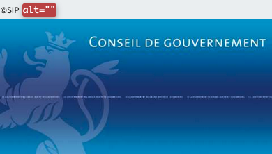Page « Actualités », l'image <img> « Conseil de gouvernement » possède un copyright à proximité mais pas d'alternative. Une alternative doit être ajoutée à l'image et le copyright doit être correctement relié à l'image.
Cadres
L'absence d'identification des cadres peut poser un problème de repérage dans la structure de la page ou de compréhension des contenus pour les personnes aveugles.
Constats sur le site
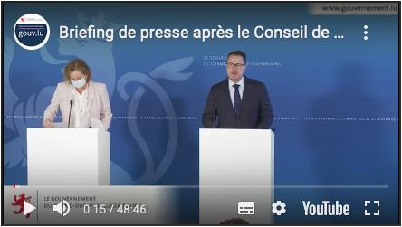Page « Conférence de presse », le cadre YouTube n'a pas d'attribut title.
Couleurs
Recommandation
Ne pas donner l'information uniquement par la couleur et utiliser des contrastes de couleurs suffisamment élevés pour les textes et les composants d'interface.
Contrastes des textes
Plusieurs couleurs présentent un rapport de contraste insuffisant, ce qui peut poser problème aux personnes déficientes visuelles qui ont des difficultés à percevoir les couleurs ou les contrastes.
Rapports de contrastes définis par le RGAA
- Pour les textes qui ont une taille de police calculée inférieure à 24px sans effet de graisse ou une taille de police calculée inférieure à 18,5px avec effet de graisse, le rapport de contraste entre la couleur du texte (y compris le texte en image) et son arrière-plan doit être de 4.5:1, au moins.
- Pour les textes qui ont une taille de police calculée supérieure ou égale à 24px sans effet de graisse ou une taille de police calculée supérieure ou égale à 18,5px avec effet de graisse, le rapport de contraste entre la couleur du texte (y compris le texte en image) et son arrière-plan doit être de 3:1, au moins.
Vous pouvez foncer les couleurs pour obtenir le rapport de contraste exigé.
Si la charte graphique ne peut être modifiée, fournissez une méthode aux utilisateurs pour consulter le site avec des contrastes suffisants. Ceci peut être réalisé simplement avec une fonctionnalité JavaScript et une surcharge CSS des couleurs.
Vous pouvez voir un exemple de ce type de mécanisme sur le site sncf.com. Dans les réglages d'accessibilité, vous trouverez une option qui permet d'afficher le site avec des contrastes renforcés et inversés.
Constats sur le site
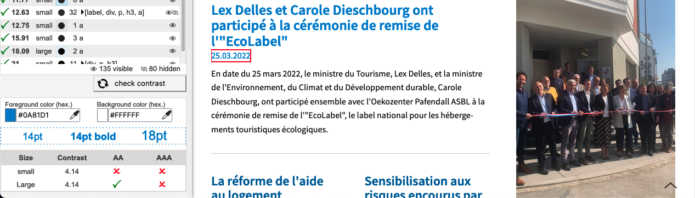 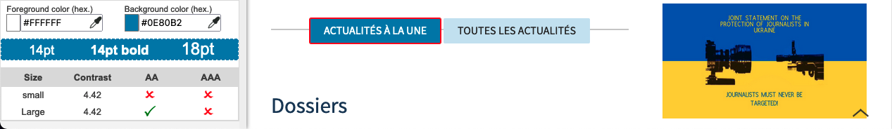 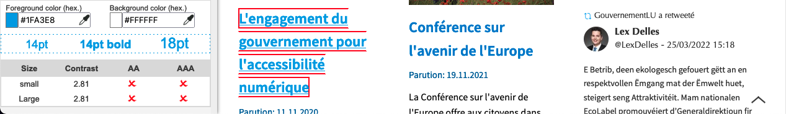 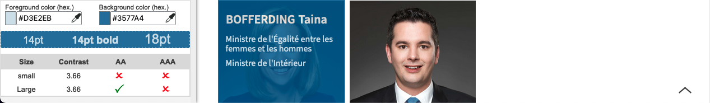
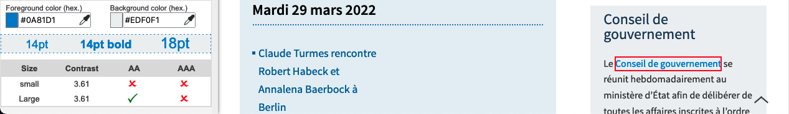
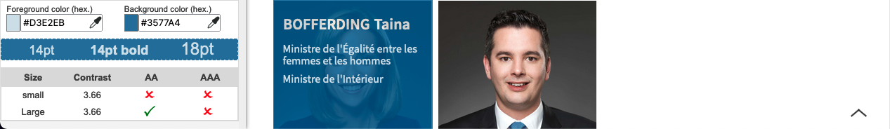
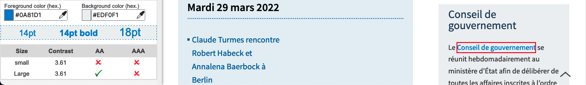
Page d'accueil :
- La couleur #fff des liens des langues de l'en-tête au survol sur le fond #0E80B2 (ratio : 4.42) ;
- La couleur #0A81D1 du lien dans le bloc « Conseil de gouvernement » sur le fond #EDF0F1 (ratio : 3.61) ;
- La couleur #0A81D1 de la date de l'actualité à la une sur le fond #fff (ratio : 4.14) ;
- La couleur #fff des liens « Actualités à la une » et « Toutes les actualités » au survol et à la prise de focus sur le fond #0E80B2 (ratio : 4.42) ;
- La couleur #1FA3E8 des liens des dossiers au survol et à la prise de focus sur le fond #fff (ratio : 2.81) ;
- La couleur #1385C1 des liens du bloc « Agenda du gouvernement » au survol et à la prise de focus sur le fond #E6EFF5 (ratio : 3.5) ;
- La couleur des liens du bloc « Présentation du gouvernement » au survol et à la prise de focus sur le fond avec image de fond (par exemple #D3E2EB sur le fond #3577A4 : ratio : 3.66).
Page « Résultats de recherche » :
- La couleur #fff du bouton « FILTRER ( Ministre, Ministère, etc.) » au survol quand la zone est fermée sur le fond #2980B1 (ratio : 4.36) ;
- La couleur #fff du bouton « FILTRER ( Ministre, Ministère, etc.) » quand la zone est ouverte sur le fond #79A0B5 (ratio : 2.8) ;
- La couleur #fff du bouton « FILTRER ( Ministre, Ministère, etc.) » au survol quand la zone est ouverte sur le fond #7BB5D0 (ratio : 2.2) ;
- La couleur #0A81D1 du lien « Réinitialiser les filtres » sur le fond #CDD9E4 (ratio : 2.89) ;
- La couleur #1FA3E8 du lien « Réinitialiser les filtres » au survol sur le fond #CDD9E4 (ratio : 1.96).
Contraste des composants d'interface
Les composants d'interface, les illustrations porteuses d'information ou encore les mises en couleurs porteuses d'information doivent être suffisamment contrastés pour être perçus par les utilisateurs ayant des troubles de perception des couleurs. Par exemple, une icône porteuse d'information devra avoir un rapport de contraste avec la couleur de fond de 3. De même, pour un champ de saisie de formulaire, dont la zone active est matérialisée par sa bordure, alors la couleur de cette bordure devra avoir un rapport de contraste de 3 avec la couleur de fond de la page.
Constats sur le site
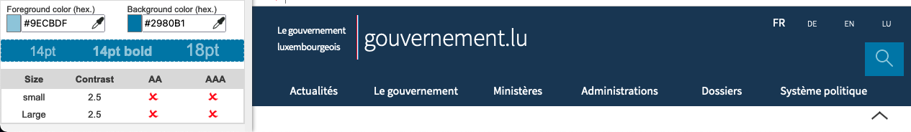Page d'accueil, la couleur #9ECBDF de l'icône « loupe » du bouton de recherche au survol et à la prise de focus sur le fond #2980B1 (ratio : 2.5).
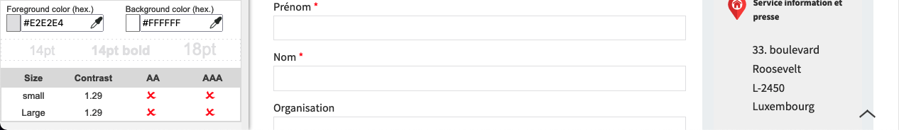Page « Contact », la couleur #E2E2E4 de la bordure des champs de formulaire sur le fond #fff (ratio : 1.29).
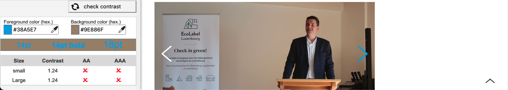Page « Actualité », la couleur #38A5E7 des flèches de navigation du carrousel au survol sur le fond avec image d'arrière-plan #9E886F (ratio : 1.2).
Multimédia
Recommandation
Donner si nécessaire à chaque média temporel une transcription textuelle, des sous-titres synchronisés et une audiodescription synchronisée pertinents. Donner à chaque média non temporel une alternative textuelle pertinente. Rendre possible le contrôle de la consultation de chaque média temporel et non temporel au clavier et s'assurer de leur compatibilité avec les technologies d'assistance.
Identifier les vidéos
Il est nécessaire d'identifier la vidéo et permettre ainsi aux utilisateurs de comprendre quelle est l'information présentée dans ce contenu.
Vous disposez de deux méthodes pour le faire :
- soit faire précéder la vidéo par un titre (solution recommandée) ;
- soit faire suivre la vidéo d'une phrase de légende (paragraphe).
Constats sur le site
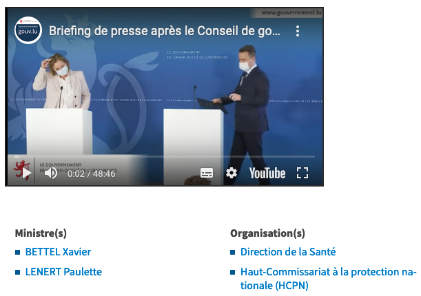Page « Conférence de presse », une fois la vidéo « Briefing presse: travaux du Conseil de gouvernement » lancée, son titre disparaît.
Tableaux
Recommandation :
Donner un résumé à chaque tableau de données complexe, s'assurer que pour chaque tableau de données ayant un titre, ce titre est pertinent, identifier clairement les cellules d'en-tête, utiliser un mécanisme pertinent pour lier les cellules de données aux cellules d'en-tête. Pour chaque tableau de mise en forme, veiller à sa bonne linéarisation.
Tableaux de mise en forme
La restitution des tableaux peut poser problème pour les personnes aveugles, car les technologies d'assistance tentent d'optimiser la navigation dans les tableaux, en modifiant par exemple le comportement des flèches de direction pour circuler plus facilement entre les cellules.
Dans un tableau de données, cela est utile et correspond au format de données tabulaires, mais dans un tableau de mise en forme, ce comportement est problématique et peut venir perturber le parcours des informations.
L'API ARIA propose une propriété (role="presentation") qui permet d'annuler la sémantique des éléments restitués.
Constats sur le site
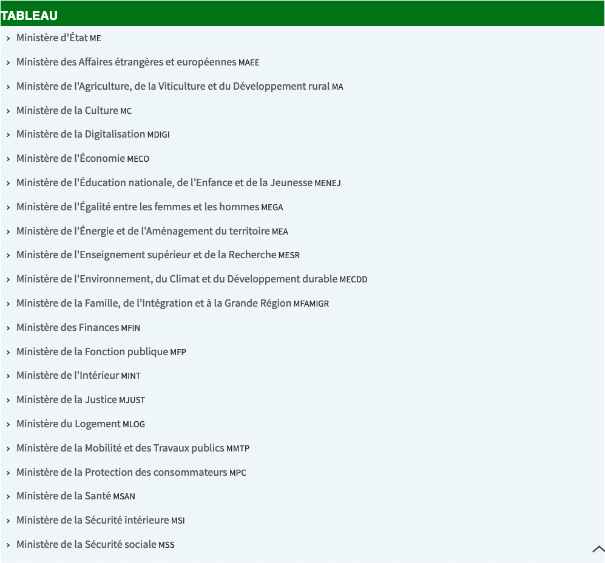Page « Ministères », il manque un role="presentation" au tableau de la liste des ministères.
Liens
Recommandation :
Donner des intitulés de lien explicites, grâce à des informations de contexte notamment, utiliser le titre de lien le moins possible. S'assurer que le nom visible est contenu dans le nom accessible.
Pertinence des intitulés
Un lien possède généralement un intitulé et un contexte. L'intitulé est le texte présent dans la balise <a> (ou la valeur de l'attribut alt de l'image dans le cas d'un lien-image) et le contexte du lien est représenté par le titre qui précède, le titre du lien (l'infobulle) ou tout simplement le texte dans lequel il est inséré.
Pour être considéré comme pertinent, l'intitulé d'un lien doit permettre de comprendre sa destination en prenant en compte son contexte.
Constats sur le site
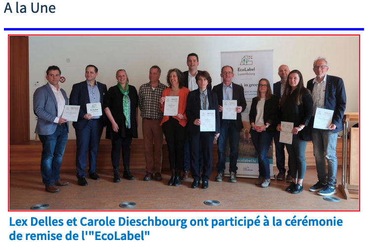Page d'accueil, l'image du lien de l'actualité à la une n'est pas indiquée comme décorative. Il lui manque un attribut alt="".
Page d'accueil, les attributs alt="Portrait officiel" des images du bloc « Présentation du gouvernement » ne sont pas pertinents.
Page « Aspects légaux », l'attribut title="Accueil" ne reprend pas le nom accessible du lien « Allez à l’accueil ».
Liens-images
Un lien-image est un lien dont le contenu n'est composé que d'une ou plusieurs images (balises <img>). Généralement, ces liens ne posent aucun problème aux utilisateurs voyants qui parviennent à comprendre la destination du lien grâce à l'image et son contexte. En revanche, pour une personne aveugle, ces liens doivent obligatoirement posséder un intitulé.
L'intitulé d'un lien-image est généré grâce à l'alternative de l'image contenue dans ce lien.
Constats sur le site
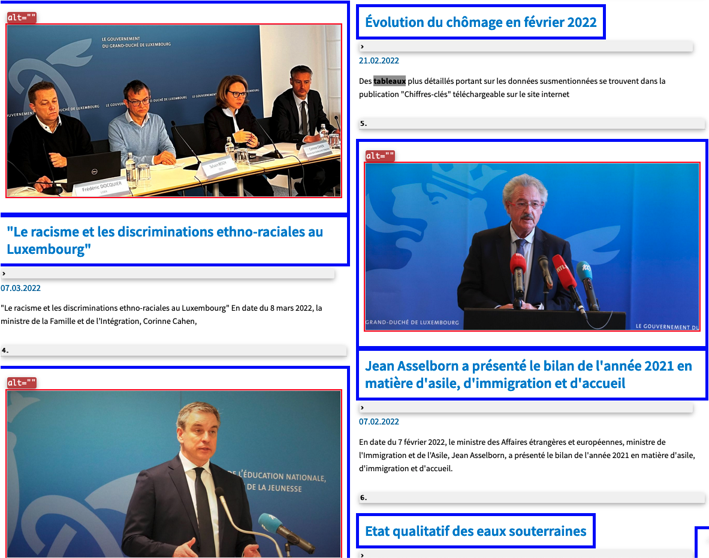Page « Résultats de recherche », la plupart des liens image de la liste des résultats n'ont pas d'intitulé.
Présence d'intitulés
Un lien doit toujours posséder un intitulé permettant à l'utilisateur de comprendre sa destination. Les liens contenant uniquement des objets graphiques (images, icônes, etc.) posent souvent problème pour les personnes aveugles.
Pour ces liens, la technique pour fournir un intitulé dépend des cas :
- Si ces liens-images sont construits avec des balises images (
<img />), renseignez l'alternative de l'image (par exemple :<a href="https://twitter.com/example"><img src="path/to/img/png"alt="Suivez-nous sur Twitter" /></a>) - Si ces liens-images sont construits avec des balises SVG (
<svg>), alors ajoutez sur cette balise unrole="img"pour indiquer aux lecteurs d'écran qu'il s'agit bien d'une image et un intitulé pararia-label="Suivez-nous sur Twitter".
Constats sur le site
Page d'accueil, le lien du bloc « Portail Gov » n'a pas d'intitulé.
Scripts
Recommandation :
Donner si nécessaire à chaque script une alternative pertinente. Rendre possible le contrôle de chaque code script au moins par le clavier et la souris et s'assurer de leur compatibilité avec les technologies d'assistance. Identifier les messages de statut lorsque c'est nécessaire.
Utilisation des boutons et des liens
Pour les aveugles et les grands malvoyants qui utilisent un lecteur d'écran, ce manque de distinction claire entre les liens et les boutons peut poser de graves problèmes.
Ainsi, un bouton implémenté sous la forme d'un lien qui déclenche une action de la page, risque de perturber l'utilisateur qui s'attendra au chargement d'une nouvelle page.
De manière générale, les liens devraient être réservés à l'affichage d'une nouvelle page ou la création de liens d'accès rapide dans le contenu. Dans tous les autres cas, l'emploi d'un bouton d'action est plus pertinent.
Enfin, chaque bouton doit avoir un nom accessible défini, soit par l'intermédiaire d'un texte (visible ou positionné hors écran) ou d'une propriété title, aria-label ou aria-labelledby.
Constats sur le site

Page « Résultats de recherche », sur mobile, l'intitulé du bouton de fermeture de la fenêtre des filtres n'est pas pertinent.
Utilisation inappropriée de propriétés ARIA
Les propriétés ARIA sont chargées de transmettre des informations indispensables à la restitution et l'utilisation des composants développés avec JavaScript aux technologies d'assistance. Une utilisation inappropriée peut poser des problèmes de restitution notamment.
Constats sur le site

Page d'accueil, le role="heading" n'est pas autorisé sur les éléments <li>.
Page d'accueil, le motif de conception ARIA Menu n'est pas adapté pour la liste des langues. Il vaut mieux le retirer.
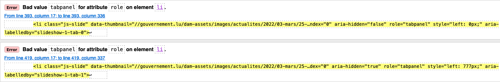Page « Actualité », le role="tabpanel" n'est pas autorisé sur les éléments de liste <li>.
Page « Dossier » :
- Le
role="tab-panel"n'est pas autorisé sur l'élément<details>; - Le
role="tab"n'est pas autorisé sur l'élément<summary>; - La propriété
aria-selectedn'est pas autorisée sur l'élément<summary>; - Un élément avec le
role="tab"doit se trouver à l'intérieur d'un élément avec lerole="tablist".
Éléments interactifs inaccessibles au clavier
Si un élément ne peut pas recevoir le focus ou n'est pas totalement utilisable au clavier, les utilisateurs pour lesquels le clavier est le seul moyen de naviguer seront bloqués.
Constats sur le site
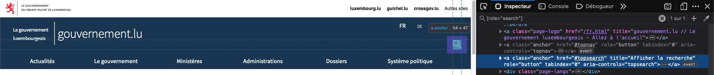
Page d'accueil :
- Le bouton « Afficher la recherche » ne s'active pas à l'aide de la touche « Espace » ;
- Le bouton « Menu » ne s'active pas à l'aide de la touche « Espace ».
Fenêtres modales
Constats sur le site
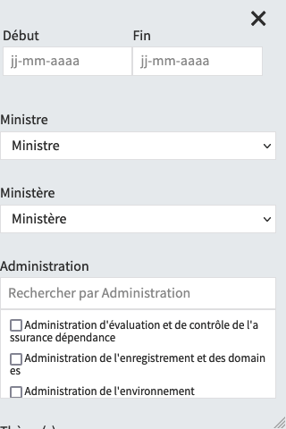Page « Résultats de recherche », sur mobile, les filtres implémentent une fenêtre modale qui ne respecte pas les principes du motif de conception ARIA Dialog.
Gestion de la visibilité de zones
Le site possède des fonctionnalités d'affichage ou de masquage des zones de contenus. L'état affiché/masqué du contenu additionnel doit pouvoir être disponible pour les technologies d'assistance afin que les utilisateurs aveugles accèdent à cet état.
Pour ce type d’élément, l’implémentation du motif ARIA Disclosure est recommandée.
Constats sur le site
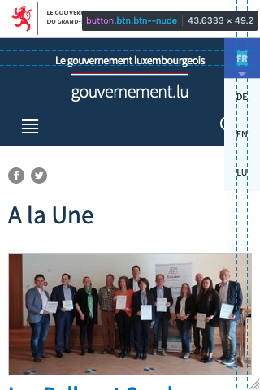 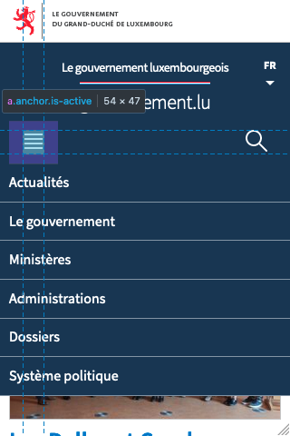 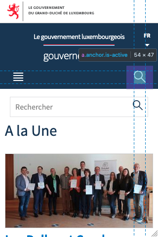Page d'accueil, sur mobile, l'état « affiché » ou « masqué » n'est pas indiqué pour ces éléments :
- Le choix de la langue dans l'en-tête ;
- Le menu principal ;
- Le moteur de recherche.
 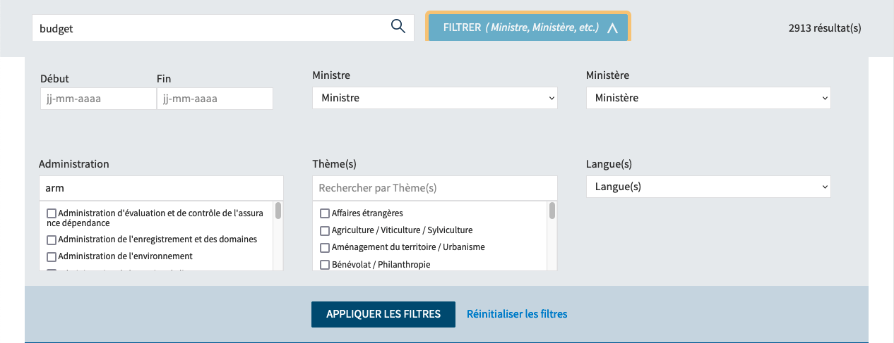
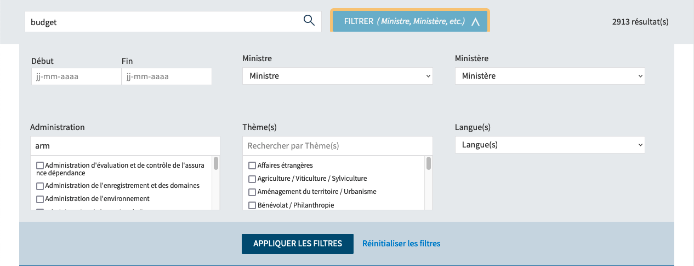
Page « Résultats de recherche », les filtres implémentent une zone afficher/masquer qui ne respecte pas les principes du motif de conception ARIA Disclosure.
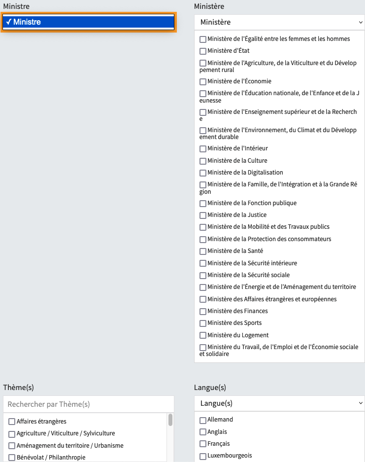Page « Résultats de recherche », les composants « Ministre », « Ministère » et « Langue(s) » ne sont pas accessibles au clavier. L'élément qui permet de les activer doit être implémenté dans un élément <button>.
Le composant affiché/masqué peut ensuite :
- Soit être implémenté dans une zone afficher/masquer à l'aide du motif de conception ARIA Disclosure ;
- Soit être implémenté dans une liste de sélection à l'aide du motif de conception ARIA ListBox.
Autocomplétion
Les champs de saisie qui proposent des listes de résultats au fil de la saisie ne sont pas toujours accessibles aux utilisateurs qui ne perçoivent pas l’écran ou ne le perçoivent pas dans sa totalité. En effet, ils n’ont pas l’information que des résultats sont apparus par exemple, ou encore que la recherche ne retourne aucun résultat.
Constats sur le site
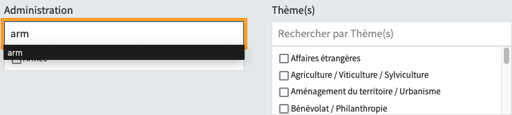Page « Résultats de recherche », les composants « Administration » et « Thème(s) » filtrent des listes de cases à cocher, mais l'utilisateur n'est pas informé de cette sélection. Il faudrait :
- Soit implémenter le motif de conception ARIA Combo Box ;
- Soit informer l'utilisateur que la liste des cases à cocher a été mise à jour.
Carrousel complexe (tabbed carousel)
Un carrousel complexe est un carrousel qui possède des boutons « Suivant », « Précédent » et un système de navigation, généralement sous forme de puces permettant d’activer un contenu particulier du carrousel.
Constats sur le site
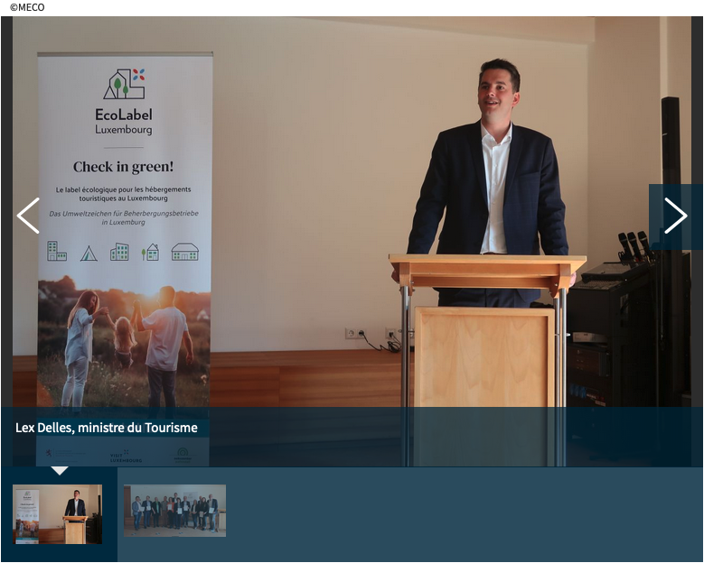Page « Actualité », Le carrousel n'est pas accessible. Il devrait implémenter le motif de conception ARIA Carousel.
Changement de contexte
Un changement de contexte est une situation où un utilisateur ne peut pas anticiper le fonctionnement d'une fonctionnalité lorsque celle-ci ouvre une nouvelle page, valide un formulaire ou ajoute ou modifie du contenu dans la page par exemple.
Cela concerne plus spécifiquement les fonctionnalités qui se lancent sans que l'utilisateur puisse les anticiper comme, par exemple, la soumission automatique d’un champ de formulaire sur la sélection d'un item ou lorsque l'utilisateur quitte un champ de saisie.
Constats sur le site
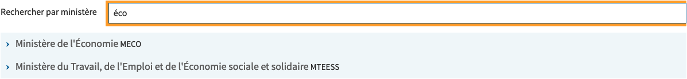Page « Ministères », lors de la saisie dans le champ « Rechercher par ministère », l'utilisateur n'est pas prévenu de la mise à jour de la liste des ministères.
- Avertir l'utilisateur de la mise à jour automatique des contenus de la page (via l'étiquette du champ par exemple) ;
- Ou ajouter un texte positionné hors écran qui indique le nombre de résultats par page et qui est mis à jour à chaque saisie.
Éléments obligatoires
Recommandation
Vérifier que chaque page web a un code valide selon le type de document, un titre pertinent et une indication de langue par défaut. Vérifier que les balises ne sont pas utilisées uniquement à des fins de présentation, que les changements de langues et de direction de sens de lecture sont indiqués.
Titre de la page
Le titre de la page (visible dans l'onglet du navigateur) est un élément de repère dans le site web. Pour les utilisateurs de lecteurs d'écran (utilisateurs aveugles ou grands malvoyants), c'est le premier élément restitué par le lecteur d'écran au chargement de la page. Cela permet de donner du contexte aux utilisateurs qui n'ont pas une vision globale de la page. C'est l'information à laquelle les utilisateurs avec des troubles de la mémoire accèdent lorsqu'ils naviguent avec l'historique de navigation du navigateur. Il est donc essentiel d'avoir des titres de pages pertinents, concis et très souvent uniques dans le site, et qui reflètent de la position de l'utilisateur dans le site web.
Il est des cas particuliers, comme les pages dont le contenu est une liste de résultats paginés (ex. : les résultats de recherche), pour lesquels le titre doit refléter la nature de la recherche ainsi que le numéro de page en cours de consultation.
Constats sur le site
Les pages « Contact », « Contact : confirmation » et « Contact : remerciement » ont toutes le même titre : « Contact - gouvernement.lu // Le gouvernement luxembourgeois ».
Page « Résultats de recherche », le titre de la page (« Recherche - gouvernement.lu // Le gouvernement luxembourgeois ») ne restitue pas le terme recherché ni le numéro de la page.
Indication de langue
Les lecteurs d'écran utilisent les indications de langue pour vocaliser le contenu dans la langue définie. La page doit contenir une définition de langue principale (généralement sur l'élément html).
Ensuite, les éléments de langue étrangère présents dans le contenu doivent être signalés. Si on trouve dans la page des termes absents du dictionnaire de la langue principale de la page, il faut les identifier afin que le lecteur d'écran les restitue dans la langue appropriée. En effet, une mauvaise prononciation pourrait mener à des incompréhensions pour les utilisateurs qui reposent uniquement sur des restitutions orales. Les noms propres sont exclus de cette obligation.
Constats sur le site
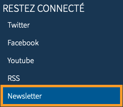Page d'accueil, dans le pied de page, il n'y a pas de changement de langue identifié sur le lien « Newsletter ».
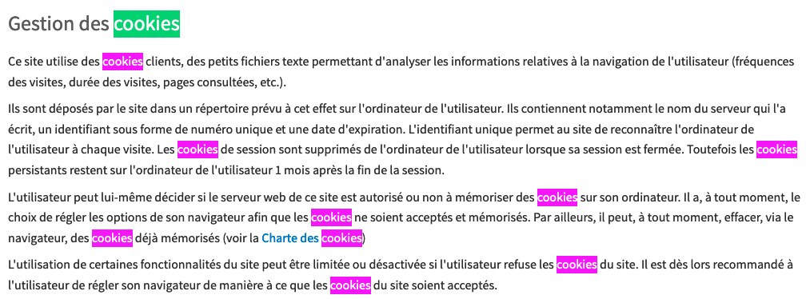Page « Aspects légaux », il n'y a pas de changement de langue identifié sur les mots « cookies » et « newsletter ».
Validité du code
Les technologies d'assistance, comme les lecteurs d'écran ou les systèmes de contrôle à la voix, s'appuient sur le code des pages pour générer les restitutions et les interactions avec l'utilisateur. Un lecteur d'écran va exploiter le code HTML fourni par le navigateur et les informations accessibles au moyen des API d'accessibilité du système.
Si le code comporte des erreurs (balises mal fermées par exemple), il y a un risque que les fonctionnalités du lecteur d'écran soient impactées, comme la navigation de lien en lien par exemple.
Pour vérifier la conformité d'une page, vous pouvez utiliser le validateur mis à disposition par le W3C.
Constats sur le site
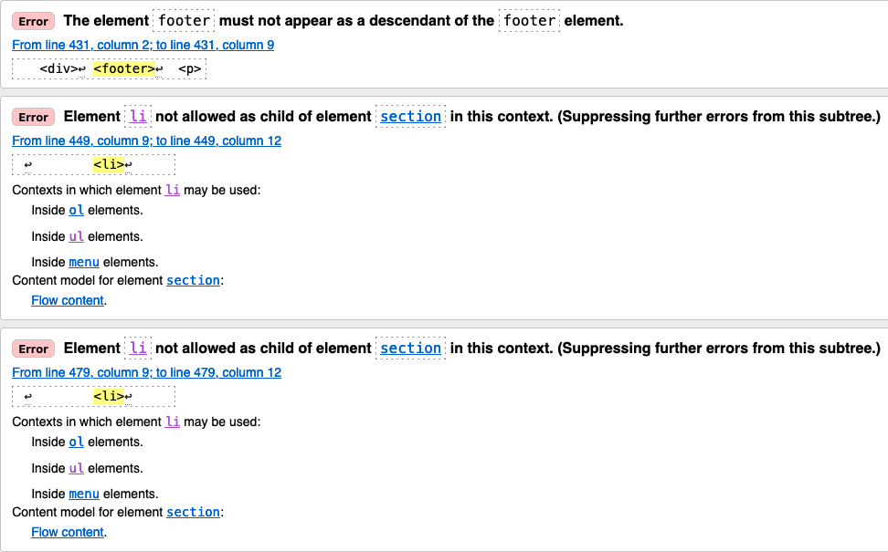Page d'accueil, des balises sont mal imbriquées :
- Un
<footer>dans un<footer>; - Des
<li>dans une<section>.
Page « Contact », un élément <option> sans attribut label ne doit pas être vide.
Page « Résultats de recherche » :
- Une valeur d'attribut
idest dupliquée :"checkboxes"; - La valeur de l'attribut
fordes<label>ne doit pas faire référence à un élément de formulaire masqué.
Balises utilisées à des fins de présentation
Les éléments de structure HTML ont chacun une sémantique particulière (paragraphe, titre, image, lien, etc.). Si les éléments sont mal employés (détournés de leur utilité première), cela peut poser des problèmes aux utilisateurs qui naviguent à l'aide d'une technologie d'assistance (lecteur d'écran, plug-in…). En effet, les technologies d'assistance disposent de raccourcis permettant de naviguer rapidement entre certains types d'éléments (paragraphes, titres, listes, etc.). Si ces éléments sont mal employés, les utilisateurs ne peuvent pas utiliser ces fonctionnalités de repère et de navigation dans le contenu.
Constats sur le site
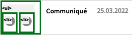Page « Actualité », la date « 25.03.2022 » du communiqué est uniquement structurée à l'aide de <div>.
Page « Le gouvernement », on trouve des paragraphes (<p>) vides servant à créer des espacements, par exemple dans le bloc « TURMES Claude ».
Structuration de l'information
Recommandation
Utiliser des titres, des listes, des abréviations et des citations pour structurer l'information. S'assurer que la structure du document est cohérente.
Titres
Le titrage des contenus est une étape importante dans la structuration des contenus. Cela répond à deux besoins :
- identifier rapidement un contenu recherché ;
- naviguer rapidement dans le contenu en se déplaçant de titre en titre.
Un titrage correct fournit à l'utilisateur d'un lecteur d'écran un plan du document et lui permet de naviguer de titre en titre pour se déplacer plus rapidement dans le contenu de la page.
Pour valider la structure de votre page, vous pouvez utiliser l'extension Firefox HeadingsMap. Lorsque l'extension est active, sélectionnez l'onglet « Headings » et vérifiez la cohérence et l'imbrication des titres.
Constats sur le site
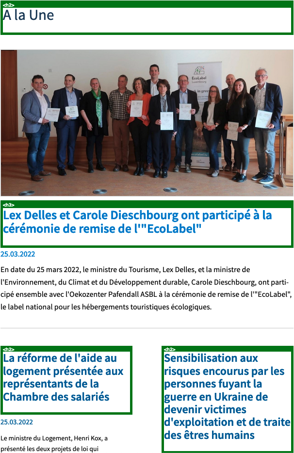Page d'accueil, les titres « La réforme de l'aide au logement présentée aux représentants de la Chambre des salariés » et « Sensibilisation aux risques encourus par les personnes fuyant la guerre en Ukraine de devenir victimes d'exploitation et de traite des êtres humains » doivent être des titres de niveau 3.

Page d'accueil, les titres « L'engagement du gouvernement pour l'accessibilité numérique » et « Conférence sur l'avenir de l'Europe » doivent être des titres de niveau 3.
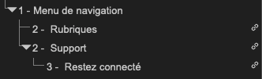Page d'accueil, le titre « Restez connecté » doit être un titre de niveau 2.
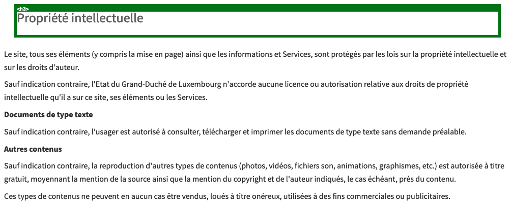Page « Aspects légaux » :
- Le texte « Documents de type texte » doit être un titre de niveau 4 ;
- Le texte « Autres contenus » doit être un titre de niveau 4.
Listes
La structuration en listes permet aux utilisateurs de lecteurs d'écran de consulter plus rapidement le contenu, grâce à des raccourcis spécifiques, et d'accéder directement à une liste ou de la passer sans avoir à en parcourir tous les items.
Constats sur le site
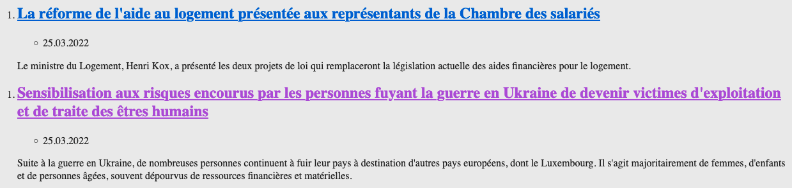Page d'accueil, la structure des actualités n'est pas pertinente. Chaque actualité constitue une liste ordonnée. Il faudrait que les actualités soient deux éléments d'une même liste.
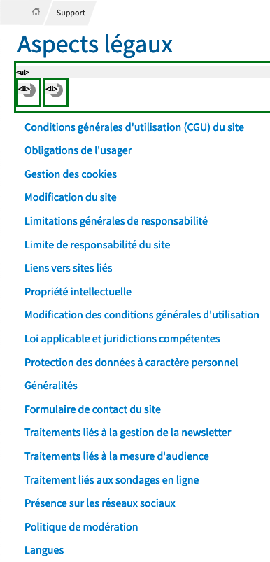Page « Aspects légaux » :
- Le fil d'Ariane n'est pas structuré sous forme de liste ;
- Le sommaire n'est pas structuré sous forme de liste et n'est pas hiérarchisé. Il est possible de hiérarchiser cette liste en imbriquant plusieurs éléments
<ol>.
Page Contact, après la soumission du formulaire, les données ne sont pas structurées sous forme de liste.
Structure du document
L'utilisation correcte des balises HTML5 et des landmarks ARIA va permettre d'enrichir la restitution pour les utilisateurs aveugles qui ne perçoivent pas les mises en forme : la navigation principale ne sera plus perçue simplement comme une liste de liens, elle sera restituée à l'utilisateur comme un élément de navigation, par l'intermédiaire du lecteur d'écran qui annoncera « région » ou « repère ».
De plus, ces marqueurs sémantiques vont également constituer des éléments de navigation rapide dans la page. Grâce à un raccourci clavier, certains utilisateurs vont pouvoir naviguer plus rapidement entre les régions qui auront été ainsi identifiées.
Constats sur le site
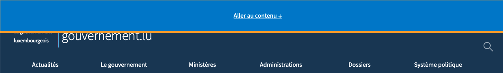Page d'accueil, les liens d'accès rapide ne sont pas structurés en zone de navigation.
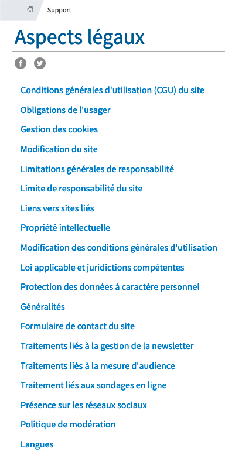Page « Aspects légaux » :
- Le fil d'Ariane n'est pas identifié comme zone de navigation ;
- Le sommaire n'est pas identifié comme zone de navigation.
Page « Résultats de recherche », la pagination n'est pas identifiée comme zone de navigation.
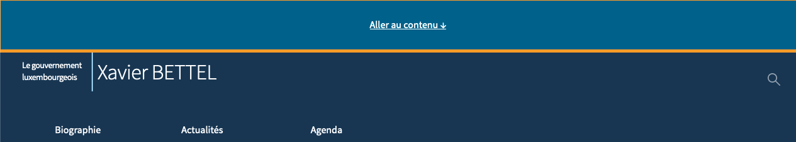Page « 1er ministre », le fil d'Ariane n'est pas identifié comme zone de navigation.
Présentation de l'information
Recommandation
Utiliser des feuilles de styles pour contrôler la présentation de l'information. Vérifier l'effet de l'agrandissement des tailles des caractères sur la lisibilité. S'assurer que les liens sont correctement identifiables, que la prise de focus est signalée, que l'interlignage est suffisant et donner la possibilité à l'utilisateur de contrôler la justification des textes. S'assurer que les textes cachés sont correctement restitués et que l'information n'est pas donnée uniquement par la forme ou la position d'un élément. S'assurer que les contenus sont lisibles et utilisables dans une fenêtre de largeur réduite. Veiller à ce que l'application de paramètres typographiques n'entraîne pas la perte de contenu ou de fonctionnalité. S'assurer que les contenus qui apparaissent au survol et à la prise de focus puissent être contrôlés par l'utilisateur.
Utilisation de CSS exclusivement
Certains utilisateurs qui présentent des troubles de la lecture (personnes dyslexiques par exemple), vont avoir besoin d'adapter la présentation des pages avec leurs propres mises en forme. Cela est possible sans difficulté si le site web utilise exclusivement les feuilles de styles CSS pour réaliser les mises en forme. Cependant, l'utilisation d'attributs et balises HTML de mise en forme rend ces adaptations plus compliquées, sinon impossibles.
Le RGAA donne la liste des attributs et balises qu'il est interdit d'utiliser.
Constats sur le site
Page « Conférence de presse », les attributs width et height sur l'élément <iframe>.
Contenu compréhensible sans les styles : ordre visible vs ordre réel
Un utilisateur aveugle n'a pas accès à la mise en forme qui parfois est porteuse d'informations importantes, notamment des relations entre les éléments.
Il est important de ne pas implémenter les textes dans l'ordre visuel, mais bien dans l'ordre logique de dépendance et hiérarchie des éléments.
Le contenu doit rester compréhensible sans les feuilles de styles (vous pouvez tester vos contenus en désactivant les feuilles de styles).
Constats sur le site
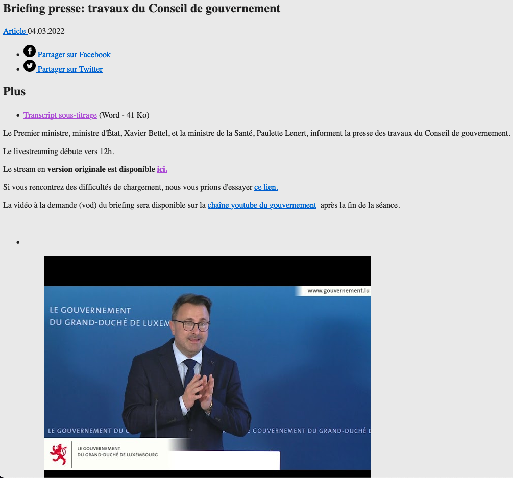Page « Conférence de presse », le bloc « Plus » et son lien vers la transcription textuelle se trouvent avant la vidéo à laquelle ils font référence dans le code source.
Contenus cachés
Constats sur le site
Page « Contact », les adresses et le lien « info@sip.etat.lu » du bloc « Service information et presse » ne sont pas restitués aux technologies d'assistance.
Paramètres typographiques
Les utilisateurs malvoyants et/ou dyslexiques ont souvent recours à des adaptations de la présentation des textes. Pour cela, on doit s'assurer que de tels paramètres ne viennent pas perturber leur lecture sur le site.
Les présentations doivent supporter l'application de paramètres typographiques visant à augmenter les interlignages, interlettrages, les espaces entre les mots et entre les paragraphes. L'application de ces paramètres ne doit pas entraîner la perte de contenus ou de fonctionnalités :
- L'interlignage augmenté de 1,5 fois la taille de la police ;
- L'espacement entre les paragraphes augmenté de 2 fois la taille de la police ;
- L'espacement des lettres augmenté de 0,12 fois la taille de la police ;
- L'espacement des mots augmenté jusqu'à 0,16 fois la taille de la police.
Constats sur le site
Page d'accueil, le contenu de certains liens du bloc « Présentation du gouvernement » est tronqué.
Formulaires
Recommandation :
Associer pour chaque formulaire chacun de ses champs à son étiquette, grouper les champs dans des blocs d'informations de même nature, regrouper les items de même nature dans les listes de choix, donner à chaque bouton un intitulé explicite. Vérifier la présence d'aide à la saisie, s'assurer que le contrôle de saisie est accessible et que l'utilisateur peut contrôler les données à caractère financier, juridique ou personnel.
Étiquettes et champs
Les champs de formulaires doivent tous posséder des étiquettes correctement reliées.
Une étiquette de champ est un texte situé à proximité du champ de formulaire qui permet de connaître la nature, le type ou le format des informations attendues.
De cette manière, lorsqu'un utilisateur entre dans le champ de saisie avec un lecteur d'écran, le lecteur d'écran lit le contenu de l'étiquette. L'utilisateur comprend alors ce qu'il doit saisir.
Sans cela, même si une étiquette est présente visuellement, l'utilisateur entendra « champ de saisie vide » en entrant dans le champ et ne saura donc pas quoi saisir.
Constats sur le site

Page d'accueil, le champ « Rechercher » ne possède pas d'étiquette visible. L'attribut placeholder n'est pas considéré comme un intitulé visible. Il doit être doublé d'un attribut title="Rechercher".
Page « Résultats de recherche » :
- Le champ « Administration » ou « Rechercher par Administration » n'a pas d'étiquette visible ;
- Le champ « Thème(s) » ou « Rechercher par Thème(s) » n'a pas d'étiquette visible ;
- Les champs des groupes « Ministre », « Ministère », « Administration », « Thème(s) » et « Langue(s) » n'ont pas d'étiquette associée. Les liaisons entre les champs et leur étiquette ne fonctionnent pas parce que les valeurs des attributs id ne sont pas valides. Ils ne doivent pas contenir d'espaces.
Intitulés de bouton pertinents
Les boutons qui permettent d'interagir avec les formulaires doivent avoir des intitulés pertinents pour que l'utilisateur comprenne l'action du bouton.
Ces intitulés sont essentiels pour les personnes aveugles, afin qu'elles soient sûres de l'action qu'elles s'apprêtent à réaliser.
Constats sur le site
Page d'accueil, l'attribut title du bouton « Lancer la recherche » ne reprend pas son intitulé, c'est-à-dire « Lancer la recherche (Global) ».
Page « Contact », l'intitulé du bouton « Envoyer » n'est pas suffisamment explicite.
Contrôle de saisie et aide à la saisie
Tous les champs obligatoires doivent être identifiés préalablement à toute validation de l’utilisateur.
Pour les champs qui attendent un format de saisie particulier pour être validés, ce format doit être spécifié à l’utilisateur par un passage de texte visible à proximité du champ. De plus, si l’utilisateur commet une erreur sur ce champ, alors le message d’erreur doit présenter un exemple réel de saisie.
Enfin, les messages d'erreur de saisie des champs de formulaire doivent être liés correctement aux champs en erreur.
Constats sur le site
Page « Contact » :
- La mention « * Champs obligatoires », qui indique que ce sont les champs qui possèdent un astérisque qui sont obligatoires, se trouve après le bouton de soumission du formulaire ;
- Le champ « E-mail » attend un format particulier, mais ce format n'est pas indiqué ;
- Le message d'erreur du champ « E-mail » ne possède pas d'exemple de saisie.
Page « Résultats de recherche » :
- Le champ « Fin » attend un format particulier qui n'est pas précisé au moment de la saisie ;
- Les messages d'erreur des champs « Début » et « Fin » ne contiennent pas d'exemple de saisie réelle.
Regroupements de champs et légendes
Les regroupements de champs sont utiles pour ne pas induire certains utilisateurs en erreur, notamment les personnes aveugles.
Les cas typiques de regroupements nécessaires sont les groupes de cases à cocher ou de boutons radio.
Il faut implémenter les champs dans un regroupement lorsque c'est nécessaire et il est obligatoire de définir une légende à ce regroupement.
Constats sur le site
Page « Résultats de recherche », ces groupes de champs ne sont pas regroupés :
- Les cases à cocher « Ministre » ;
- Les cases à cocher « Ministère » ;
- Les cases à cocher « Langue(s) ».
Page « Résultats de recherche », ces groupes de champs n'ont pas de légende :
- Le groupe de cases à cocher « Administration » ;
- Les groupe de cases à cocher « Thème(s) ».
Identification des données attendues
Certains utilisateurs qui ont des troubles d'accès au langage verbal (paralysie cérébrale, aphasie par exemple) auront des difficultés à accéder au sens des termes écrits. Ainsi, pour leur permettre de remplacer les étiquettes présentes dans les formulaires par des étiquettes (verbales ou imagées) qu'ils connaissent, il est nécessaire d'identifier les champs avec un attribut particulier, de sorte qu'une technologie d'assistance pourra réaliser la personnalisation du formulaire nécessaire à l'utilisateur.
L'identification de ces champs permet également aux utilisateurs d'employer des outils pour remplir automatiquement les champs identifiés avec des valeurs de l'utilisateur.
On ne va rechercher que les champs qui attendent une donnée personnelle. Le RGAA demande d'utiliser l'attribut autocomplete et il fournit l'ensemble des valeurs possibles pour l'attribut.
Constats sur le site

Page « Contact » :
- Le champ « Prénom » ;
- Le champ « Nom » ;
- Le champ « Organisation » ;
- Le champ « E-mail » ;
- Le champ « Téléphone ».
Navigation
Recommandation :
Faciliter la navigation dans un ensemble de pages par au moins deux systèmes de navigation différents (menu de navigation, plan du site ou moteur de recherche), un fil d'Ariane et l'indication de la page active dans le menu de navigation. Identifier les groupes de liens importants et la zone de contenu et donner la possibilité de les éviter par des liens de navigation interne. S'assurer que l'ordre de tabulation est cohérent et que la page ne comporte pas de piège au clavier. S'assurer que les raccourcis clavier qui utilisent une seule touche sont contrôlables par l'utilisateur.
Landmarks ARIA
Pour fournir des points de repère aux utilisateurs aveugles, il faudra également implémenter les landmarks ARIA sur les balises HTML 5 de la page.
Constats sur le site
Page d'accueil, les liens d'accès rapide ne sont pas identifiés comme zone de navigation.
Page d'accueil, le moteur de recherche n'est pas identifié tant que le bouton qui l'affiche n'a pas été activé.
Page « Aspects légaux » :
- Le fil d'Ariane n'est pas identifié comme zone de navigation ;
- Le sommaire n'est pas identifié comme zone de navigation.
Page « Résultats de recherche », la pagination n'est pas identifiée comme zone de navigation.
Page « 1er ministre » :
- Les liens d'accès rapide ne sont pas identifiés comme zone de navigation ;
- Le fil d'Ariane n'est pas identifié comme zone de navigation ;
- Le moteur de recherche n'est pas identifié tant que celui-ci n'a pas été affiché par une action de l'utilisateur.
Ordre de tabulation
La navigation dans les contenus peut être considérablement compliquée pour les personnes aveugles ou les personnes handicapées motrices qui naviguent au clavier si l'ordre de tabulation n'est pas cohérent.
L'ordre de tabulation est déterminé par l'ordre des éléments dans le code HTML. Il ne suit pas forcément l'ordre de lecture de la page ou de l'écran, mais il doit être cohérent en fonction de la nature des contenus et des fonctionnalités.
Constats sur le site
Page d'accueil, le bouton qui permet d'afficher le formulaire de recherche se trouve entre le logo et les liens des langues, mais une fois le formulaire affiché, celui-ci se trouve entre le menu principal et le contenu principal de la page.
Consultation
Recommandation
Vérifier que l'utilisateur a le contrôle des procédés de rafraîchissement, des changements brusques de luminosité, des ouvertures de nouvelles fenêtres et des contenus en mouvement ou clignotants. Ne pas faire dépendre l'accomplissement d'une tâche d'une limite de temps sauf si elle est essentielle et s'assurer que les données saisies sont récupérées après une interruption de session authentifiée. Proposer des versions accessibles ou rendre accessibles les documents en téléchargement. S'assurer que la consultation n'est pas dépendante de l'orientation de l'écran. Toujours proposer un geste simple en alternative d'un geste complexe permettant de réaliser une action.
Activation et annulation des actions sur un point unique
Certaines personnes handicapées motrices peuvent déclencher des fonctionnalités par inadvertance lorsque les événements déclencheurs sont mal gérés ou ne permettent pas dans certaines conditions de pouvoir être annulés.
Les utilisateurs sont habitués à pouvoir annuler une action sur un lien ou un bouton en maintenant le bouton de la souris enfoncé (ou le doigt appuyé) puis en glissant en dehors de la zone interactive pour relâcher le pointeur (ou lever le doigt). Cela permet de ne pas déclencher l’événement associé au lien ou au bouton. Il s’agit ici de préserver cette stratégie d’annulation employée par les utilisateurs.
Cela concerne essentiellement les déclenchements de fonctionnalités sur les événements descendants (down event) tels que les événements « posé », « touché » et « pressé » sur surface tactile (touchstart) ou mousedown pour les pointeurs de type souris.
Les comportements à respecter sont les suivants :
- De manière générale, pas de déclenchement sur les événements descendants (down-event), mais uniquement sur les événements ascendants (up event) ;
- Dans les cas des fonctionnalités qui emploient les événements descendants et ascendants (comme le drag'n drop), il existe une méthode pour annuler l’action en cours ou après son achèvement.
Constats sur le site
Page « Résultats de recherche », pour les calendriers des champs « Début » et « Fin », le déclenchement du clic sur les dates n'est pas accessible.